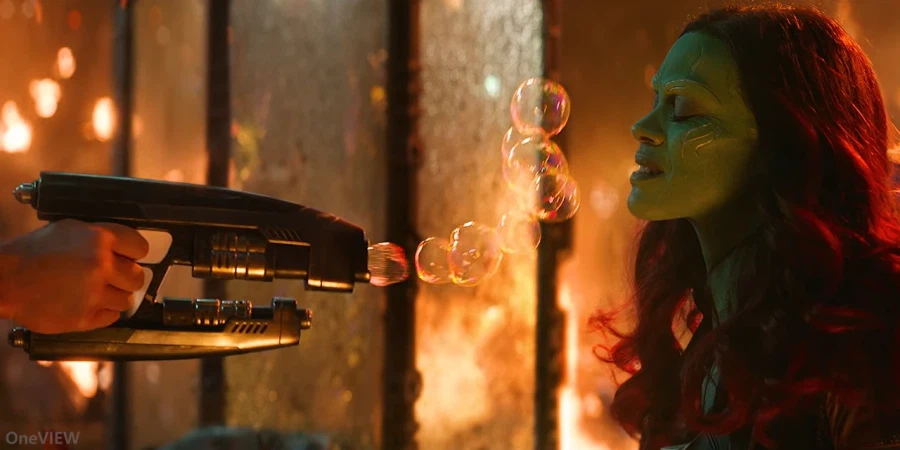
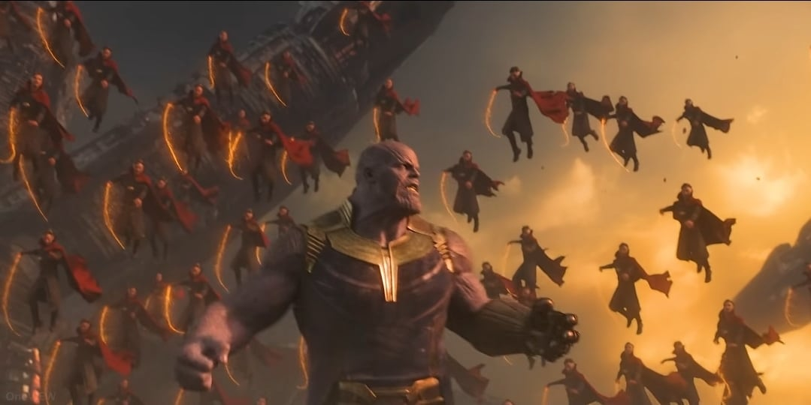
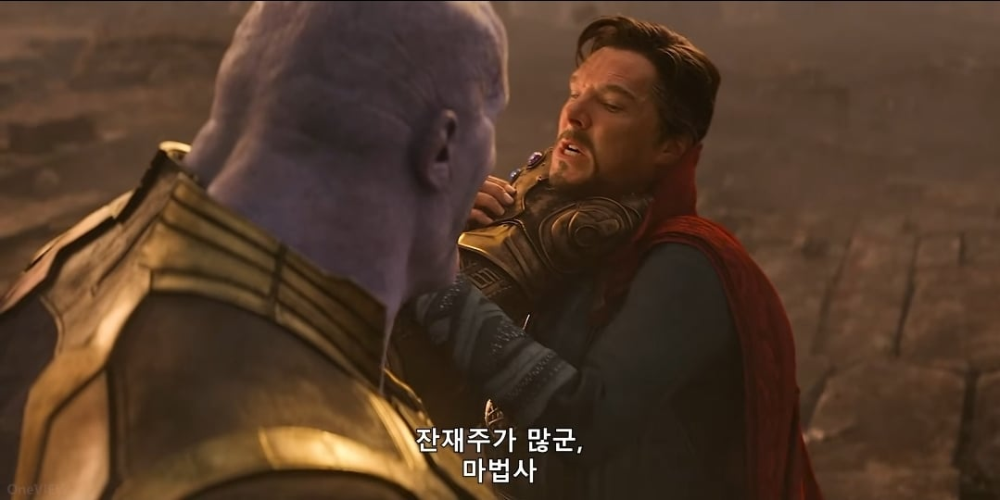
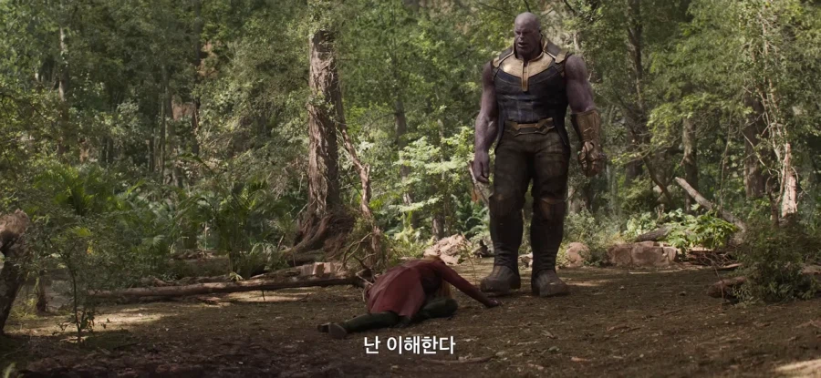
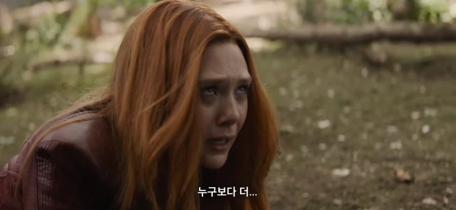
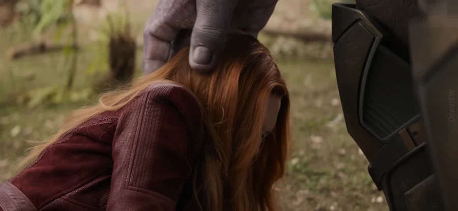
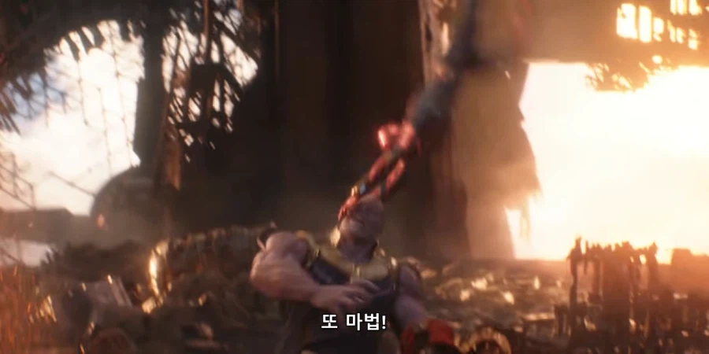

이야 새끼...깡따구 있구먼


기술이 많아서 질뻔했다 너 잘 싸운다야
야 넌 내가 인정한다 진정한 전사다



정말 미안하다 근데 원대한 목표를 위해 어쩔수 없었어

아오 계속 옆에서 쫑알쫑알 이 벌레새끼가 진짜

이야 새끼...깡따구 있구먼


기술이 많아서 질뻔했다 너 잘 싸운다야
야 넌 내가 인정한다 진정한 전사다



정말 미안하다 근데 원대한 목표를 위해 어쩔수 없었어

아오 계속 옆에서 쫑알쫑알 이 벌레새끼가 진짜
극장에서 봤을 때
이 글 첫 짤 장면에 웃는 사람 많아서 뭔가 싶었었음
그랬던 타노스가 케이블이란 이름으로 제 옆에 누워있네요
인섹츠!
와 221추 0붐 ㅋㅋㅋㅋㅋ
크아악 내 눈앞에서 사라져라 벼룩파리청년!